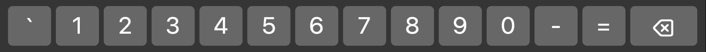
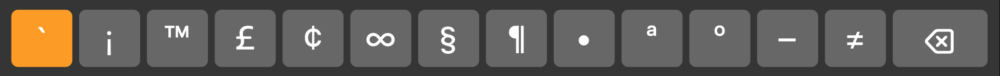
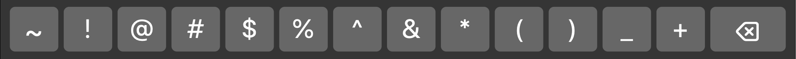
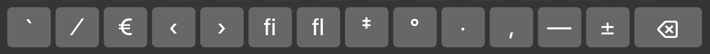
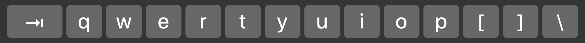
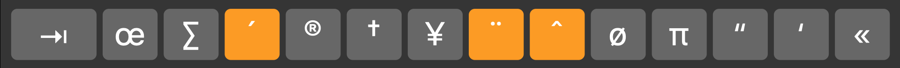
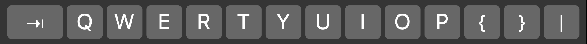
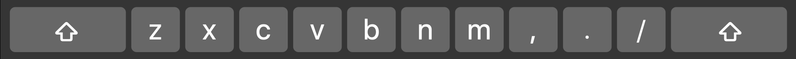
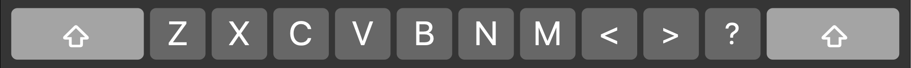

Updates: http://github.com/RedBearAK/optspecialchars
Revision date: 2022-06-17
This document catalogues all characters that are available on a standard US Apple keyboard in macOS with Option and Shift+Option keys, along with their Unicode addresses and Alt Codes (all characters have Unicode numbers except the Apple logo, but not all characters have Alt Codes). The list does not include additional characters that may be available on the ABC Extended keyboard.
The page breaks in this document are designed to allow the document to print out on 14 pages, or 7 duplexed pages, with related Option and Shift+Option characters from the same row on facing pages if using double-sided printing.
The last five pages are dedicated to [Notes] listing all the accented characters that can be made with each of the "dead keys", which are shown in orange on some rows of Apple's Keyboard Viewer. (See screenshot images in each section.)
` 1 2 3 4 5 6 7 8 9 0 - =
(`) ¡ ™ £ ¢ ∞ § ¶ • ª º – ≠


| Key | Description | Unicode | Alt Code |
|---|---|---|---|
| Opt+` | Dead Keys Grave accent (combining) | [Note 1] | (See below) |
| Opt+1 | Inverted Exclamation Mark | {U+00A1} | (Alt+173) |
| Opt+2 | Trade Mark Sign Emoji | {U+2122} | (Alt+0153) |
| Opt+3 | British Pound currency symbol | {U+00A3} | (Alt+156) |
| Opt+4 | Cent currency symbol | {U+00A2} | (Alt+155) |
| Opt+5 | Infinity mathematical symbol | {U+221E} | (Alt+236) |
| Opt+6 | Section symbol | {U+00A7} | (Alt+0167) |
| Opt+7 | Paragraph mark (Pilcrow) symbol | {U+00B6} | (Alt+0182) |
| Opt+8 | Bullet Point symbol (solid) | {U+2022} | (Alt+0149) |
| Opt+9 | Feminine Ordinal Indicator | {U+00AA} | (Alt+166) |
| Opt+0 | Masculine Ordinal Indicator | {U+00BA} | (Alt+167) |
| Opt+- | En Dash punctuation mark | {U+2013} | (Alt+0150) |
| Opt+= | Not Equal To symbol | {U+2260} | (No Alt Code) |
~ ! @ # $ % ^ & * ( ) _ +
` ⁄ € ‹ › fi fl ‡ ° · ‚ — ±


| Key | Description | Unicode | Alt Code |
|---|---|---|---|
| ⇧+Opt+` | Grave Accent (non-combining) | {U+0060} | (Alt+96) |
| ⇧+Opt+1 | Fraction Slash | {U+2044} | (No Alt Code) |
| ⇧+Opt+2 | Euro currency symbol | {U+20AC} | (Alt+0128) |
| ⇧+Opt+3 | Single Left-Pointing Angle Quotation mark | {U+2039} | (Alt+0139) |
| ⇧+Opt+4 | Single Right-Pointing Angle Quotation mark | {U+203A} | (Alt+0155) |
| ⇧+Opt+5 | Latin Small Ligature Fi | {U+FB01} | (No Alt Code) |
| ⇧+Opt+6 | Latin Small Ligature Fl | {U+FB02} | (No Alt Code) |
| ⇧+Opt+7 | Double dagger (cross) symbol | {U+2021} | (Alt+0135) |
| ⇧+Opt+8 | Degree Sign | {U+00B0} | (Alt+248) |
| ⇧+Opt+9 | Middle Dot (interpunct/middot) | {U+00B7} | (Alt+250) |
| ⇧+Opt+0 | Single low-9 quotation mark | {U+201A} | (Alt+0130) |
| ⇧+Opt+- | Em Dash punctuation mark | {U+2014} | (Alt+0151) |
| ⇧+Opt+= | Plus Minus mathematical symbol | {U+00B1} | (Alt+241) |
q w e r t y u i o p [ ] \
œ ∑ (´) ® † ¥ (¨) (ˆ) ø π “ ‘ «


| Key | Description | Unicode | Alt Code |
|---|---|---|---|
| Opt+Q | Small oe (oethel) ligature | {U+0153} | (Alt+0156) |
| Opt+W | N-Ary Summation (sigma) notation | {U+2211} | (No Alt Code) |
| Opt+E | Dead Keys Acute accent (combining) | [Note 2] | (See below) |
| Opt+R | Registered Trade Mark Sign | {U+00AE} | (Alt+0174) |
| Opt+T | Simple dagger (cross) symbol | {U+2020} | (Alt+0134) |
| Opt+Y | Japanese Yen currency symbol | {U+00A5} | (Alt+157) |
| Opt+U | Dead Keys Umlaut accent (combining) | [Note 3] | (See below) |
| Opt+I | Dead Keys Circumflex accent (combining) | [Note 4] | (See below) |
| Opt+O | Latin Small Letter o with Stroke | {U+00F8} | (Alt+0248) |
| Opt+P | Greek Small Letter Pi | {U+03C0} | (Alt+227) |
| Opt+[ | Left Double Quotation Mark | {U+201C} | (Alt+0147) |
| Opt+] | Left Single Quotation Mark | {U+2018} | (Alt+0145) |
| Opt+\ | Left-Pointing Double Angle Quotation Mark | {U+00AB} | (Alt+174) |
Q W E R T Y U I O P { } |
Œ „ ´ ‰ ˇ Á ¨ ˆ Ø ∏ ” ’ »

| Key | Description | Unicode | Alt Code |
|---|---|---|---|
| ⇧+Opt+Q | Capital OE (Oethel) ligature | {U+0152} | (Alt+0140) |
| ⇧+Opt+W | Double Low-9 Quotation mark | {U+201E} | (Alt+0132) |
| ⇧+Opt+E | Acute Accent diacritic (non-combining) | {U+00B4} | (Alt+0180) |
| ⇧+Opt+R | Per mille symbol (zero over zero-zero) | {U+2030} | (Alt+0137) |
| ⇧+Opt+T | Caron/hacek diacritic (non-combining) | {U+02C7} | (No Alt Code) |
| ⇧+Opt+Y | Latin Capital Letter a with Acute | {U+00C1} | (Alt+0193) |
| ⇧+Opt+U | Diaeresis/Umlaut (non-combining) | {U+00A8} | (Alt+0168) |
| ⇧+Opt+I | Circumflex Accent (non-combining) | {U+02C6} | (Alt+0136) |
| ⇧+Opt+O | Latin Capital Letter O with Stroke | {U+00D8} | (Alt+0216) |
| ⇧+Opt+P | N-Ary Product mathematical symbol | {U+220F} | (No Alt Code) |
| ⇧+Opt+[ | Right Double Quotation Mark | {U+201D} | (Alt+0148) |
| ⇧+Opt+] | Right Single Quotation Mark | {U+2019} | (Alt+0146) |
| ⇧+Opt+\ | Right-Pointing Double Angle Quotation Mark | {U+00BB} | (Alt+175) |
a s d f g h j k l ; '
å ß ∂ ƒ © ˙ ∆ ˚ ¬ … æ
| Key | Description | Unicode | Alt Code |
|---|---|---|---|
| Opt+A | Small Letter a with Ring Above | {U+00E5} | (Alt+130) |
| Opt+S | German Eszett/beta (Sharfes/Sharp S) | {U+00DF} | (Alt+225) |
| Opt+D | Partial Differential | {U+2202} | (No Alt Code) |
| Opt+F | Function/florin currency symbol | {U+0192} | (Alt+159) |
| Opt+G | Copyright Sign | {U+00A9} | (Alt+0169) |
| Opt+H | Dot Above diacritic (non-combining) | {U+02D9} | (No Alt Code) |
| Opt+J | Increment, laplace operator symbol | {U+2206} | (No Alt Code) |
| Opt+K | Ring Above diacritic (non-combining) | {U+02DA} | (No Alt Code) |
| Opt+L | Not Sign angled dash symbol | {U+00AC} | (Alt+170) |
| Opt+; | Horizontal ellipsis | {U+2026} | (Alt+0133) |
| Opt+' | Small ae ligature | {U+00E6} | (Alt+130) |
A S D F G H J K L : "
Å Í Î Ï ˝ Ó Ô [] Ò Ú Æ
| Key | Description | Unicode | Alt Code |
|---|---|---|---|
| ⇧+Opt+A | Capital Letter A with Ring Above | {U+00C5} | (Alt+143) |
| ⇧+Opt+S | Latin Capital Letter I with Acute | {U+00CD} | (Alt+0205) |
| ⇧+Opt+D | Latin Capital Letter I with Circumflex | {U+00CE} | (Alt+0206) |
| ⇧+Opt+F | Latin Capital Letter I with Diaeresis | {U+00CF} | (Alt+0207) |
| ⇧+Opt+G | Double Acute Accent (non-combining) | {U+02DD} | (No Alt Code) |
| ⇧+Opt+H | Latin Capital Letter O with Acute | {U+00D3} | (Alt+0211) |
| ⇧+Opt+J | Latin Capital Letter O with Circumflex | {U+00D4} | (Alt+0212) |
| ⇧+Opt+K | Apple logo ‡ (See footnote) | {U+F8FF} | (No Alt Code) |
| ⇧+Opt+L | Latin Capital Letter O with Grave | {U+00D2} | (Alt+0210) |
| ⇧+Opt+; | Latin Capital Letter U with Acute | {U+00DA} | (Alt+0218) |
| ⇧+Opt+' | Capital AE ligature | {U+00C6} | (Alt+146) |
‡ The Apple logo character is in a Unicode "Private Use Area" and is only found in Mac fonts (at U+F8FF) or Baskerville Old Face font on PCs (at U+F000). In Windows Character Map app, use Advanced View -> Go to Unicode -> F000 after selecting Baskerville Old Face in the Font field. App must support the use of the character in that font. Character will not show properly in general text editors that can't attach font metadata to the character, but should paste and show up in word processors or desktop publishing software. If not supported by the app/font, it will show a [blank], or a box with ? or F8/FF inside.
z x c v b n m , . /
Ω ≈ ç √ ∫ (˜) µ ≤ ≥ ÷

| Key | Description | Unicode | Alt Code |
|---|---|---|---|
| Opt+Z | Greek Capital Letter Omega | {U+03A9} | (Alt+234) |
| Opt+X | Almost Equal To symbol | {U+2248} | (Alt+247) |
| Opt+C | Small Letter c with Cedilla | {U+00E7} | (Alt+130) |
| Opt+V | Square Root radical sign | {U+221A} | (Alt+251) |
| Opt+B | Integral mathematical symbol | {U+222B} | (No Alt Code) |
| Opt+N | Dead Keys Tilde accent (combining) | [Note 5] | (See below) |
| Opt+M | Micro (mu) symbol | {U+00B5} | (Alt+230) |
| Opt+, | Less Than or Equal To symbol | {U+2264} | (Alt+243) |
| Opt+. | Greater Than or Equal To symbol | {U+2265} | (Alt+242) |
| Opt+/ | Obelus/Division symbol | {U+00F7} | (Alt+246) |
Z X C V B N M < > ?
¸ ˛ Ç ◊ ı ˜ Â ¯ ˘ ¿

| Key | Description | Unicode | Alt Code |
|---|---|---|---|
| ⇧+Opt+Z | Spacing Cedilla diacritic (non-combining) | {U+00B8} | (Alt+0184) |
| ⇧+Opt+X | Ogonek diacritic (non-combining) | {U+02DB} | (No Alt Code) |
| ⇧+Opt+C | Capital Letter C with Cedilla | {U+00C7} | (Alt+128) |
| ⇧+Opt+V | Lozenge (diamond) shape symbol | {U+25CA} | (No Alt Code) |
| ⇧+Opt+B | Latin Small Letter Dotless i | {U+0131} | (No Alt Code) |
| ⇧+Opt+N | Small Tilde character | {U+02DC} | (Alt+0152) |
| ⇧+Opt+M | Latin Capital Letter a with Circumflex | {U+00C2} | (Alt+0194) |
| ⇧+Opt+, | Macron/overline/overbar (non-combining) | {U+00AF} | (Alt+0175) |
| ⇧+Opt+. | Breve diacritic (non-combining) | {U+02D8} | (No Alt Code) |
| ⇧+Opt+/ | Inverted Question mark | {U+00BF} | (Alt+168) |
Type Option+Grave, then a/e/i/o/u or A/E/I/O/U, to produce:
à è ì ò ù À È Ì Ò Ù
| Key | Description | Unicode | Alt Code |
|---|---|---|---|
| Opt+`, a | Latin Small a with Grave Diacritic | {U+00E0} | (Alt+0224) |
| Opt+`, e | Latin Small e with Grave Diacritic | {U+00E8} | (Alt+0232) |
| Opt+`, i | Latin Small i with Grave Diacritic | {U+00EC} | (Alt+0236) |
| Opt+`, o | Latin Small o with Grave Diacritic | {U+00F2} | (Alt+0242) |
| Opt+`, u | Latin Small u with Grave Diacritic | {U+00F9} | (Alt+0249) |
| Opt+`, A | Latin Capital A with Grave Diacritic | {U+00C0} | (Alt+0192) |
| Opt+`, E | Latin Capital E with Grave Diacritic | {U+00C8} | (Alt+0200) |
| Opt+`, I | Latin Capital I with Grave Diacritic | {U+00CC} | (Alt+0204) |
| Opt+`, O | Latin Capital O with Grave Diacritic | {U+00D2} | (Alt+0210) |
| Opt+`, U | Latin Capital U with Grave Diacritic | {U+00D9} | (Alt+0217) |
Type Option+e, then a/e/i/o/u or A/E/I/O/U, to produce:
á é í ó ú Á É Í Ó Ú
| Key | Description | Unicode | Alt Code |
|---|---|---|---|
| Opt+`, a | Latin Small a with Acute Diacritic | {U+00E1} | (Alt+0225) |
| Opt+`, e | Latin Small e with Acute Diacritic | {U+00E9} | (Alt+0233) |
| Opt+`, i | Latin Small i with Acute Diacritic | {U+00ED} | (Alt+0237) |
| Opt+`, o | Latin Small o with Acute Diacritic | {U+00F3} | (Alt+0243) |
| Opt+`, u | Latin Small u with Acute Diacritic | {U+00FA} | (Alt+0250) |
| Opt+`, A | Latin Capital A with Acute Diacritic | {U+00C1} | (Alt+0193) |
| Opt+`, E | Latin Capital E with Acute Diacritic | {U+00C9} | (Alt+0201) |
| Opt+`, I | Latin Capital I with Acute Diacritic | {U+00CD} | (Alt+0205) |
| Opt+`, O | Latin Capital O with Acute Diacritic | {U+00D3} | (Alt+0211) |
| Opt+`, U | Latin Capital U with Acute Diacritic | {U+00DA} | (Alt+0218) |
Type Option+u, then a/e/i/o/u/y or A/E/I/O/U/Y, to produce:
ä ë ï ö ü ÿ Ä Ë Ï Ö Ü Ÿ
| Key | Description | Unicode | Alt Code |
|---|---|---|---|
| Opt+`, a | Latin Small a with Umlaut Diacritic | {U+00E4} | (Alt+0228) |
| Opt+`, e | Latin Small e with Umlaut Diacritic | {U+00EB} | (Alt+0235) |
| Opt+`, i | Latin Small i with Umlaut Diacritic | {U+00EF} | (Alt+0239) |
| Opt+`, o | Latin Small o with Umlaut Diacritic | {U+00F6} | (Alt+0246) |
| Opt+`, u | Latin Small u with Umlaut Diacritic | {U+00FC} | (Alt+0252) |
| Opt+`, y | Latin Small y with Umlaut Diacritic | {U+00FF} | (Alt+0255) |
| Opt+`, A | Latin Capital A with Umlaut Diacritic | {U+00C4} | (Alt+0196) |
| Opt+`, E | Latin Capital E with Umlaut Diacritic | {U+00CB} | (Alt+0203) |
| Opt+`, I | Latin Capital I with Umlaut Diacritic | {U+00CF} | (Alt+0207) |
| Opt+`, O | Latin Capital O with Umlaut Diacritic | {U+00D6} | (Alt+0214) |
| Opt+`, U | Latin Capital U with Umlaut Diacritic | {U+00DC} | (Alt+0220) |
| Opt+`, Y | Latin Capital Y with Umlaut Diacritic | {U+0178} | (Alt+0159) |
Type Option+i, then a/e/i/o/u or A/E/I/O/U, to produce:
â ê î ô û Â Ê Î Ô Û
| Key | Description | Unicode | Alt Code |
|---|---|---|---|
| Opt+`, a | Latin Small a with Circumflex Diacritic | {U+00E2} | (Alt+0226) |
| Opt+`, e | Latin Small e with Circumflex Diacritic | {U+00EA} | (Alt+0234) |
| Opt+`, i | Latin Small i with Circumflex Diacritic | {U+00EE} | (Alt+0238) |
| Opt+`, o | Latin Small o with Circumflex Diacritic | {U+00F4} | (Alt+0244) |
| Opt+`, u | Latin Small u with Circumflex Diacritic | {U+00FB} | (Alt+0251) |
| Opt+`, A | Latin Capital A with Circumflex Diacritic | {U+00C2} | (Alt+0194) |
| Opt+`, E | Latin Capital E with Circumflex Diacritic | {U+00CA} | (Alt+0202) |
| Opt+`, I | Latin Capital I with Circumflex Diacritic | {U+00CE} | (Alt+0206) |
| Opt+`, O | Latin Capital O with Circumflex Diacritic | {U+00D4} | (Alt+0212) |
| Opt+`, U | Latin Capital U with Circumflex Diacritic | {U+00DB} | (Alt+0219) |
Type Option+n, then a/n/o or A/N/O to produce:
ã ñ õ Ã Ñ Õ
| Key | Description | Unicode | Alt Code |
|---|---|---|---|
| Opt+`, a | Latin Small a with Tilde Diacritic | {U+00E3} | (Alt+0227) |
| Opt+`, n | Latin Small n with Tilde Diacritic | {U+00F1} | (Alt+0241) |
| Opt+`, o | Latin Small o with Tilde Diacritic | {U+00F5} | (Alt+0245) |
| Opt+`, A | Latin Capital A with Tilde Diacritic | {U+00C3} | (Alt+0195) |
| Opt+`, N | Latin Capital N with Tilde Diacritic | {U+00D1} | (Alt+0209) |
| Opt+`, O | Latin Capital O with Tilde Diacritic | {U+00D5} | (Alt+0213) |
◊ End of Document